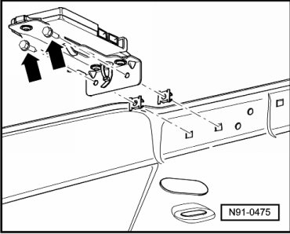
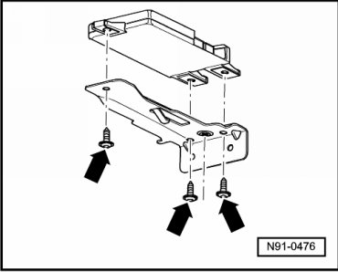

Antenna Selection Control Module
Antenna Selection Control Module
Removing
Before starting repair work, perform the following:
- Switch off ignition, switch off all electrical consumers and remove ignition key.
- Remove molded headliner.
- Remove both mounting bolts - arrows - and remove control module with bracket from roof reinforcement.

- Disconnect connectors.
- Remove the three bolts - arrows - and remove control module from bracket.

Installing
Install in reverse order of removal.